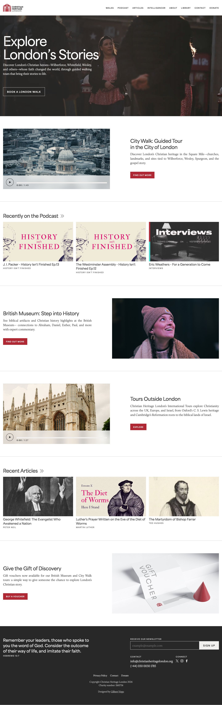
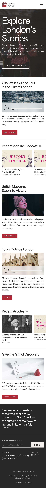
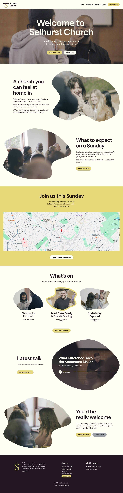
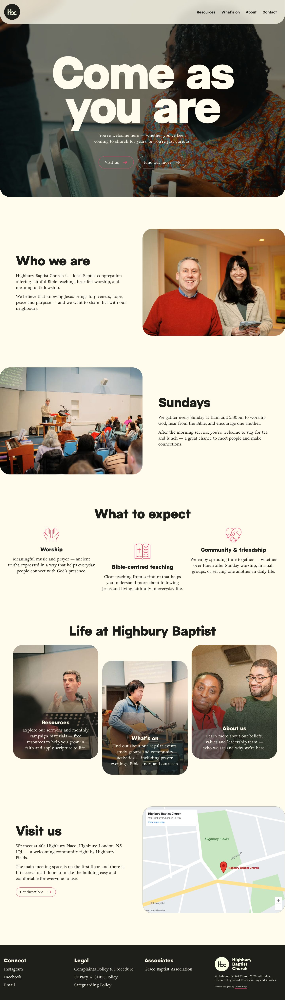
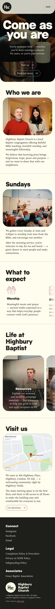

Mockups go back to being screenshots. The landing video, the headline build-in and the button hover each get a tile next to them: the video plays muted on a loop with the page’s real headline and buttons set over it in HTML, so type stays sharp and the buttons are live. Videos load nothing until their tile is on screen and pause when it leaves. Two layouts.
The stage becomes a horizontal scroller, as Life Church Richmond already is: laptop, phone, then the tiles, with the next one peeking in at the right edge. Same pattern on every card, room for as many tiles as a project earns, and the card stays one screen tall. No scrollbar drawn. Cost: tiles past the edge are only found by people who scroll sideways.


Discover London’s Christian heroes, whose faith changed the world, through guided walking tours.
Book a London walk


You’re welcome here — whether you’ve been coming to church for years, or you’re just curious.
Mockups stay exactly as they are; the tiles sit below in a two-column row. Nothing is hidden off the edge, and the video gets a wider frame. Cost: each of these three cards grows by about a screen, and on a phone the tiles stack into a long column.